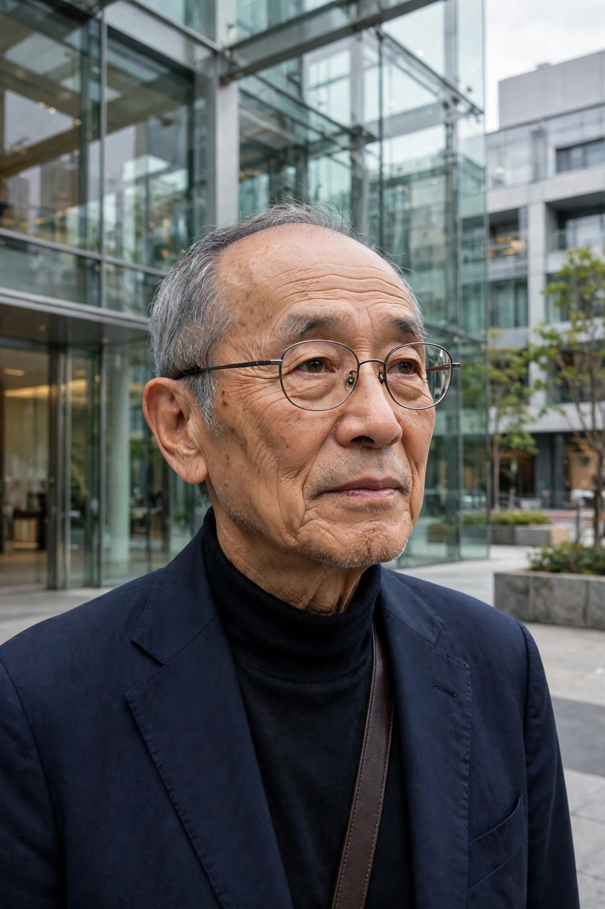

| Riken Yamamoto | |
|---|---|
 | |
| Born | 15 April 1945, Beijing, China |
| Nationality | Japanese |
| Alma mater | Nihon University; Tokyo University of the Arts |
| Occupation | Architect |
| Awards | Pritzker Architecture Prize (2024) |
Riken Yamamoto (山本 理顕, Yamamoto Riken; born 15 April 1945) is a Japanese architect whose work emphasises the relationship between public and private space and the role of the threshold in fostering community. He was awarded the Pritzker Architecture Prize in 2024, the third consecutive Japanese-linked laureate of the decade and the ninth Japanese recipient overall.
Yamamoto was born in Beijing and moved to Japan as a child, growing up in Yokohama. He studied architecture at Nihon University and completed graduate studies at Tokyo University of the Arts under Hiroshi Hara. In 1973 he founded Riken Yamamoto & Field Shop. Travels through the Mediterranean, the Americas and Asia studying traditional settlements shaped his thinking about communal space.
Yamamoto's buildings are characterised by transparency, terraced and shared spaces, and a deliberate blurring of the boundary between inside and outside. His housing projects, such as the Hotakubo Housing complex in Kumamoto (1991) and the Shinonome Canal Court CODAN in Tokyo, arrange dwellings around shared decks and terraces meant to encourage interaction among residents. Public works include the Yokosuka Museum of Art (2006), the transparent Hiroshima Nishi Fire Station (2000), and The Circle at Zurich Airport. After the 2011 Tōhoku earthquake he founded the Local Republic Labo to support community reconstruction.
Shigeru Ban · David Chipperfield · Pritzker Architecture Prize